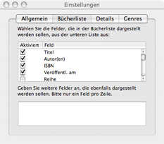

Der Reiter „Bücherliste”
Das Einstellungsfenster bietet Ihnen viele Möglichkeiten, Books
an Ihre persönlichen Bedürfnisse anzupassen. Dazu stehen Ihnen
vier verschiedene Reiter zur Verfügung. Einstellungen, die Auswirkungen
auf die Büchersammlung haben, werden innerhalb des Reiters „Bücherliste”
vorgenommen.

Einstellhinweise
Einige Felder, die häufig gebraucht werden, werden durch Books bereits
vorgegeben. Dazu zählen unter anderem der Titel, der/die Autor(en),
ISBN usw.
Alle Felder, die innerhalb der Büchersammlung angezeigt werden sollen,
können über das Setzen eines Häkchens aktiviert werden. Möchten Sie
die Reihenfolge der Einträge ändern, klicken Sie auf das jeweilige
Feld und verschieben den Eintrag nach oben oder unten, während Sie
die Maustaste gedrückt halten.
Fortgeschrittene Nutzer können ebenfalls zusätzliche Felder anzeigen
lassen. Tragen Sie dazu den Namen des zusätzlichen Feldes in die untere
Anzeige ein. Beachten Sie bitte, daß jeweils nur ein Feldname pro Zeile
eingetragen werden darf. Um eine weitere Zeile hinzuzufügen, bestätigen
Sie Ihren Eintrag mit der Eingabetaste.
Beachten Sie bitte auch, daß der Feldname, der in die untere Zeile
eingetragen wird, mit dem Feldnamen, der im Informationsfenster der
Bücher festgelegt wurde, übereinstimmt.